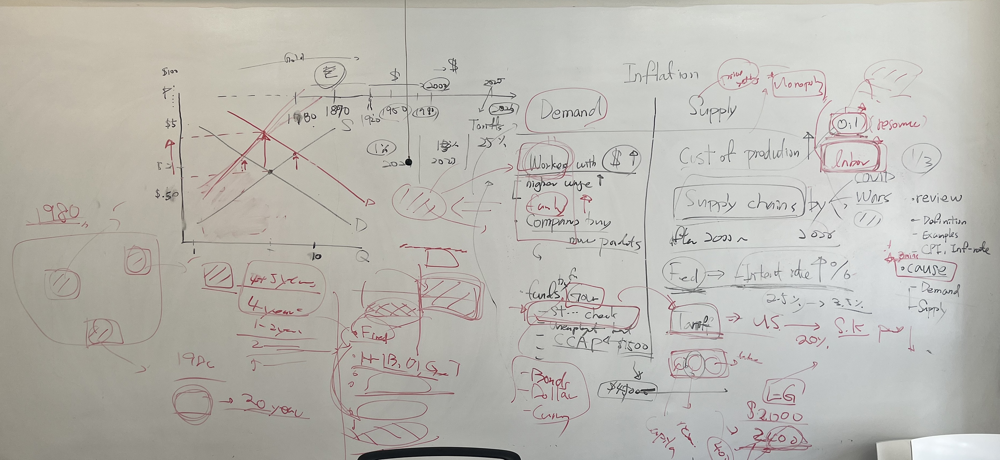

My teaching centers on quantitative reasoning as a practice of interpretation, participation, and critical inquiry. Rather than treating mathematics and statistics as purely technical skills, I help students use numbers, graphs, and data to understand social life, inequality, public information, and human experience.

Quantitative Reasoning I & II
I have taught Quantitative Reasoning I and II at The New School for approximately ten semesters, primarily as instructor of record. In Fall 2025 and Spring 2026, my Quantitative Reasoning I courses received an overall learning experience rating of 4.8/5.
Across the past four years, my course and instructor evaluations have generally remained around 4.5/5.
Interpretation, Participation, and Critical Inquiry
Throughout these years, I have tried to approach teaching not simply as the transmission of technical knowledge, but as a collaborative process of interpretation, participation, and critical inquiry.
I work to create a participatory classroom environment grounded in psychological safety, where students feel comfortable asking questions, making mistakes, and engaging in open discussion without fear of embarrassment or judgment.
I connect quantitative reasoning and statistics to real-world social issues—including labor, inequality, climate change, minimum wage, and public information—so that students see numbers not as abstract formulas but as tools for understanding human experiences and social structures.
More broadly, my teaching philosophy is shaped by the belief that education is not only about learning how to calculate, but also about learning how to interpret the world with curiosity, empathy, and intellectual honesty.

Collaborative classroom discussion integrating inflation, labor markets, inequality, supply-demand analysis, and quantitative interpretation through participatory whiteboard-based inquiry.
Field-Based Quantitative Inquiry
In my Quantitative Reasoning courses, students conduct field-based research projects, collect and clean original datasets, interpret visualizations, and connect quantitative reasoning to broader social and economic questions.
One project asked students to conduct observational fieldwork across Manhattan retail stores, examining pricing, material composition, production geography, labor conditions, and consumer markets. Students then analyzed the combined dataset through statistical visualization, literature review, and reflective analytical writing.
“The mean would be totally useless here. When a distribution is this skewed, the mean gets pulled by the tail and stops representing anything real.”
“Even the act of collecting data was stratified by store type.”
“Price alone really cannot identify what kind of store something came from.”
“Professor Lee is the best math professor I have ever had. He is extremely clear in his explanations and always takes the time to show not just how to do something, but why it works.”
“This course changed the way I think about math and data. I came in mainly wanting to fulfill a requirement, and I’m leaving with a real interest in quantitative reasoning and how it can be used to understand the world more critically.”
“I wasn’t just learning math; I was learning in an environment where people genuinely cared about one another as human beings.”
“The way we progressed from basic concepts to Excel, data visualization, and then full projects made the mathematics feel practical rather than abstract.”
“Working with topics such as plastic waste, sweatshops, minimum wage, inflation, and data misinterpretation helped me see how quantitative reasoning shows up in the news and in everyday decisions.”
“His enthusiasm for the class made the environment a space where I felt I could ask questions and truly understand lofty concepts.”
“Because of Hoyeon, I can understand the importance of statistical data and analysis and how to use it in my profession.”